Before taking Photography 1 at San Antonio College, I had no idea what I was doing. I just knew I wanted to capture special moments between my friends, family, and I. The first image below is a photo I took with the self-timer function on my camera at the Magic Garden in Philadelphia, PA. I remember just setting the camera down and sprinting up the steps, hoping I angled it up enough to get the shot. I attribute the quality of this picture mainly to the environment. With such a pretty scene, it's hard to go wrong. The second picture was taken in Boston, MA while visiting my husband's family for Christmas. I pride myself on the fact that it wasn't blurry but I have no idea what angle I was trying to get here. I believe it was more point and shoot than anything.
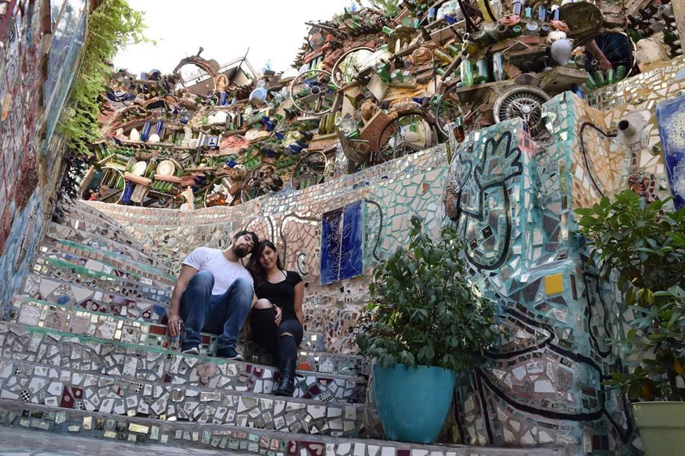 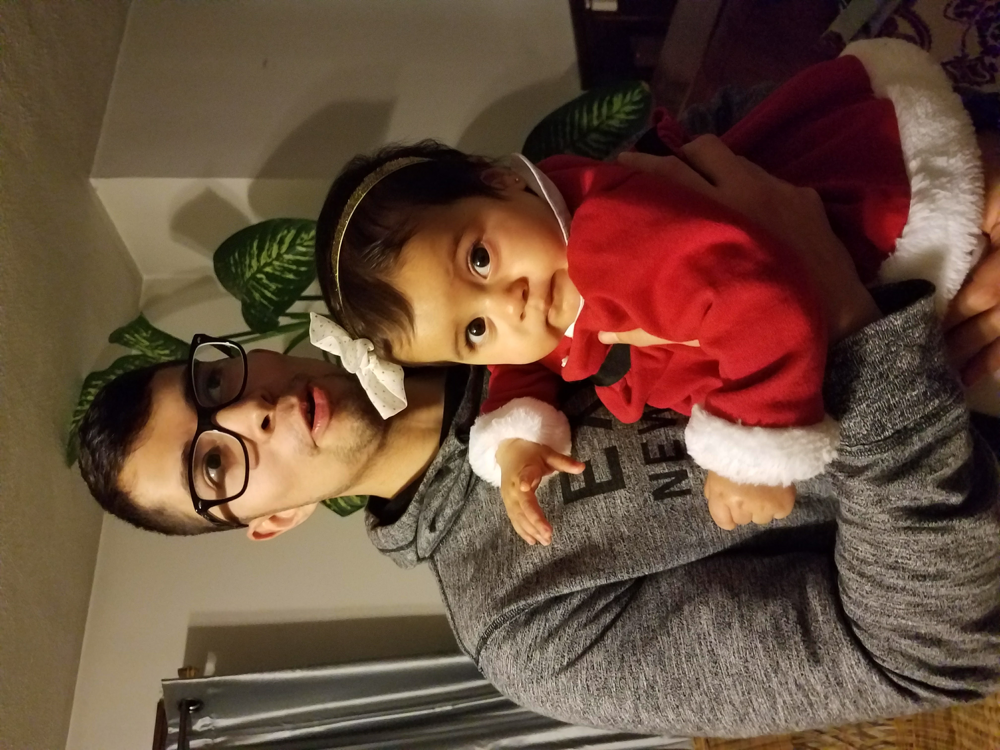The following photos were taken during my time in my Photo 1 course. Throughout the course we learned about shutter speed, aperture, auto focus, manual focus, action photography, protrait photography, landscape photography, and many other beginner lessons. I learned a lot about my camera and how different lenses make a huge impact. I also learned how to turn my phone into a decent camera. My favorite lesson has to be how to use and manipulate natural lighting to take photos to another level. I'm so happy I took this course, it's made me into a decent photographer and even more, a humble student.
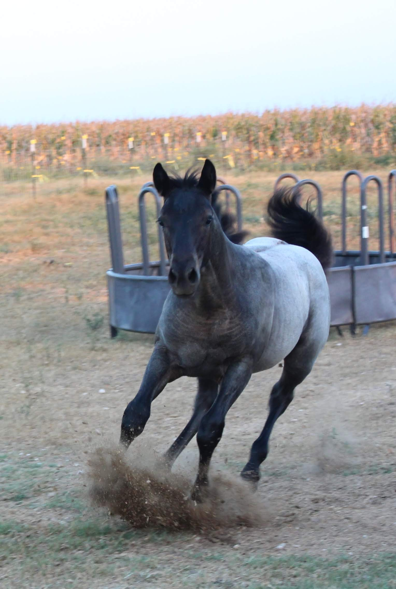 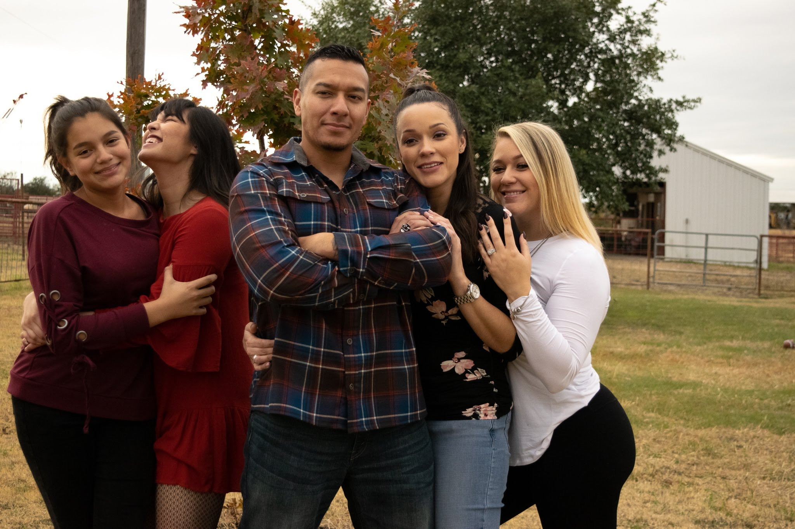 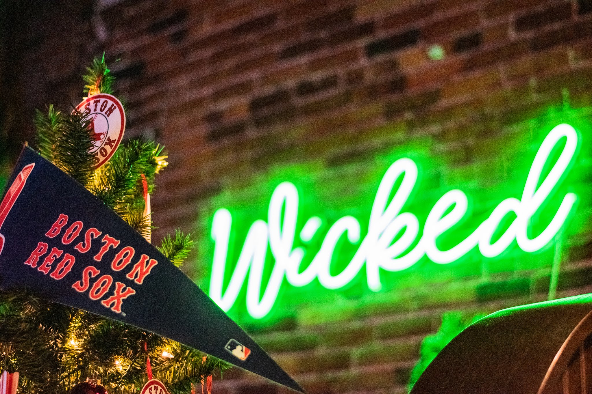
Now that I know what I am doing, in a very basic way, I have been taking more and more quality photos. The photos captured below were taken after the course and some were even captured on my phone! I have made photography a hobby of mine and I hope you enjoy the photos as much as I did when taking them. I also have experience in editing photos in Lightroom and Photoshop. During my time as a reporter for San Antonio College's campus newspaper, The Ranger, I also took some photos for some of the articles I wrote. Those photos can be found on their website, which I have linked below.
 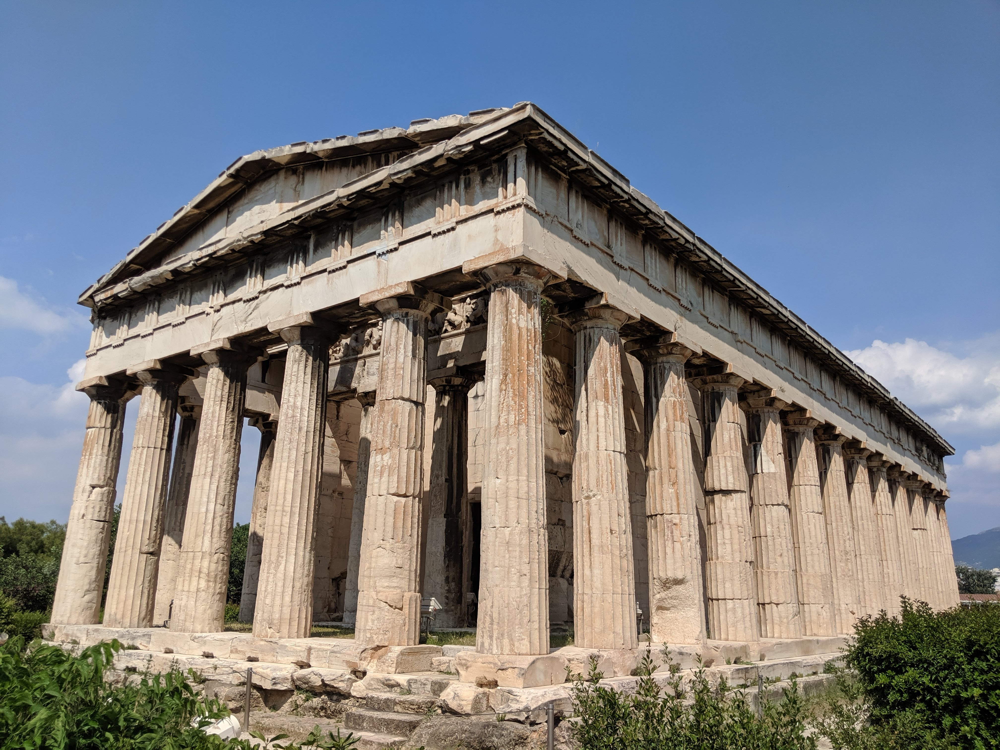
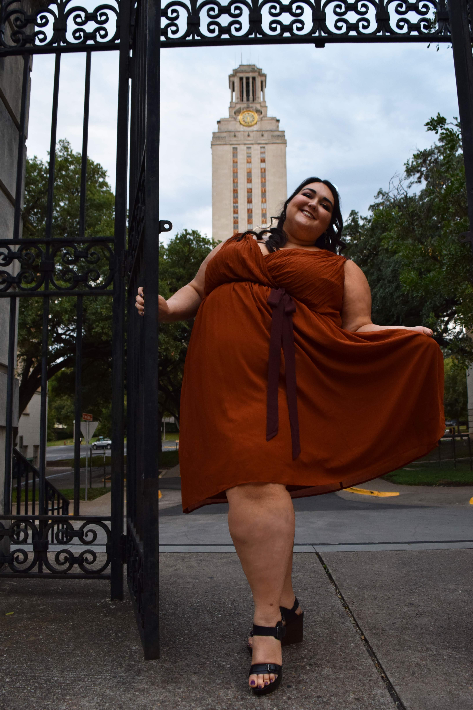
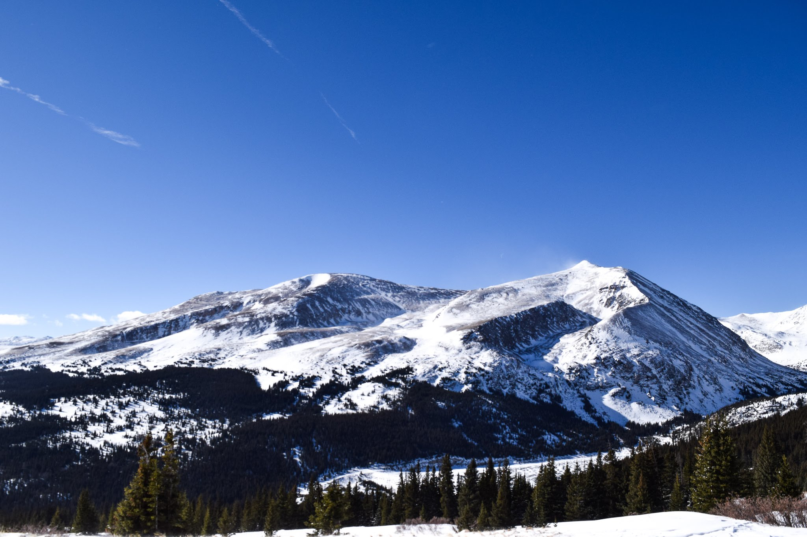
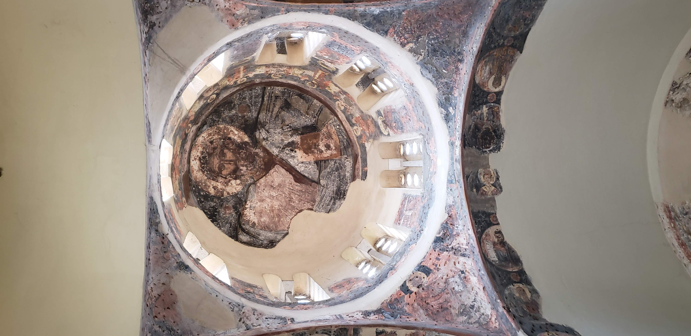
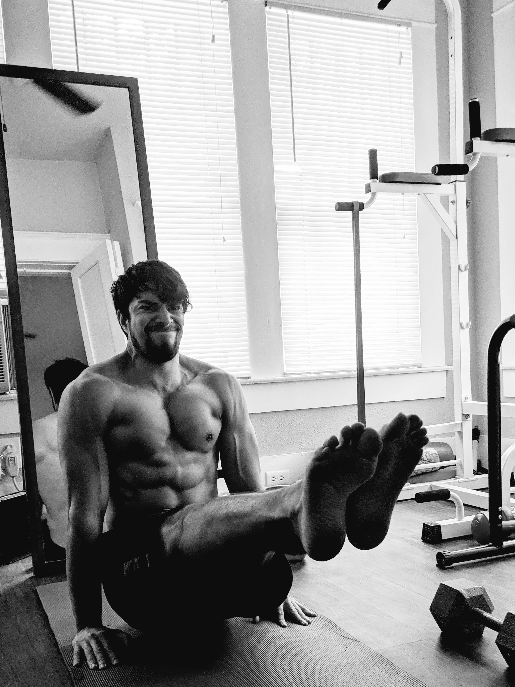
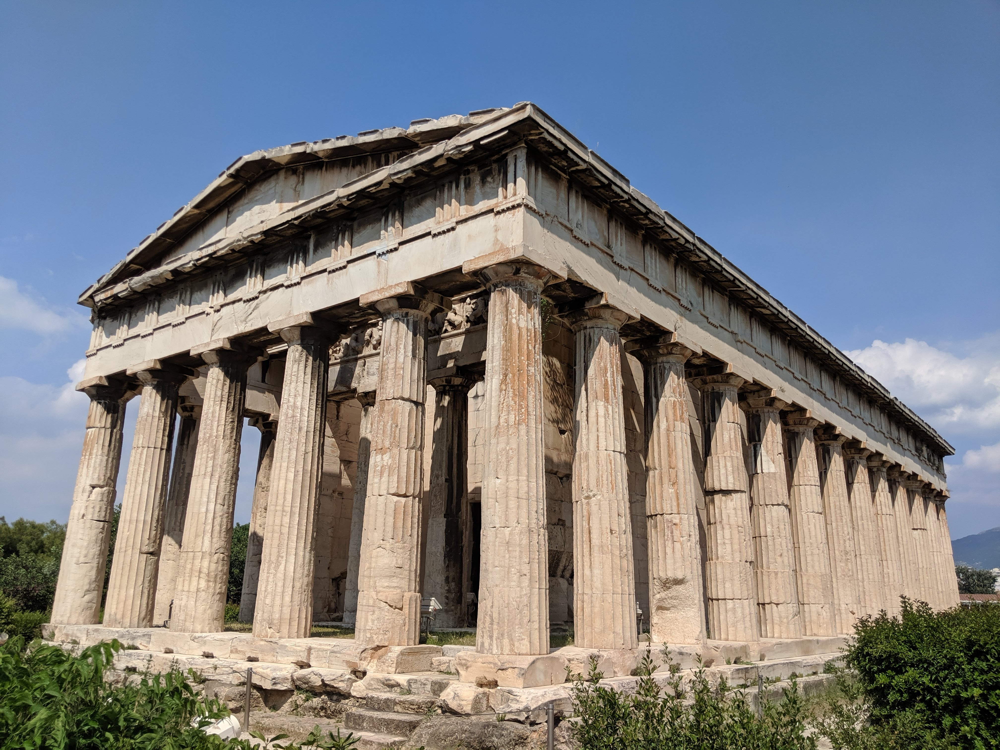
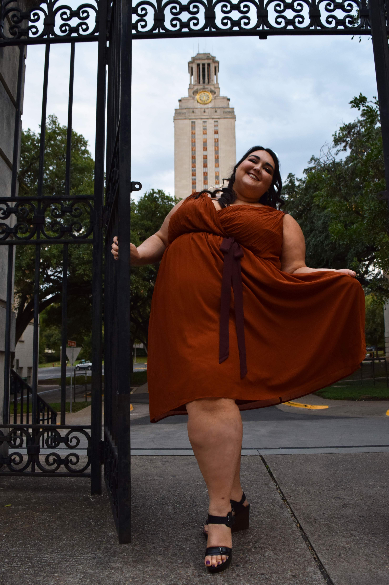
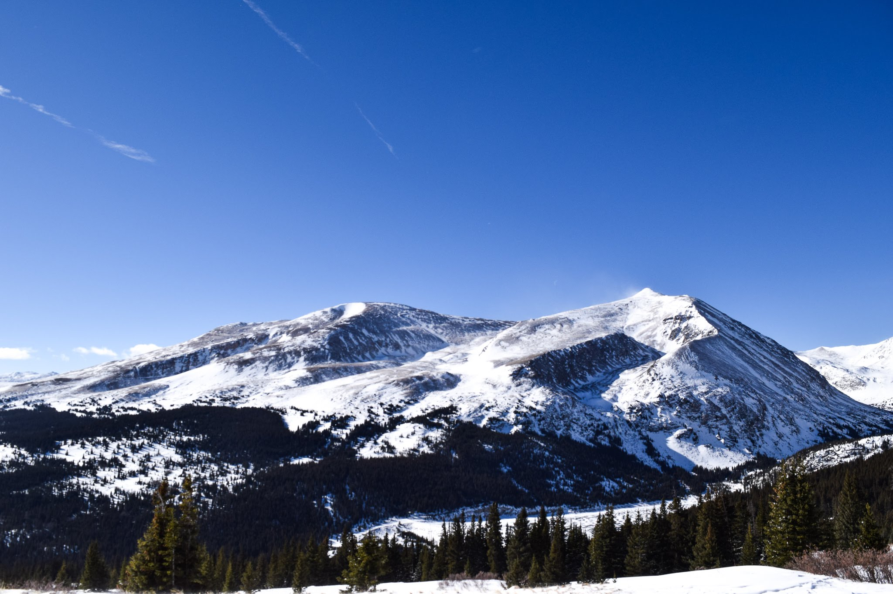
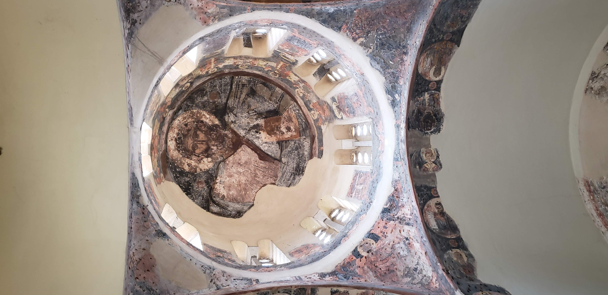
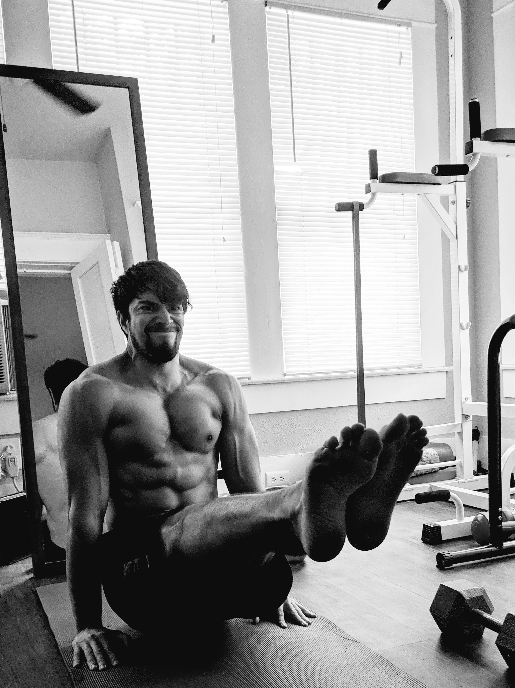